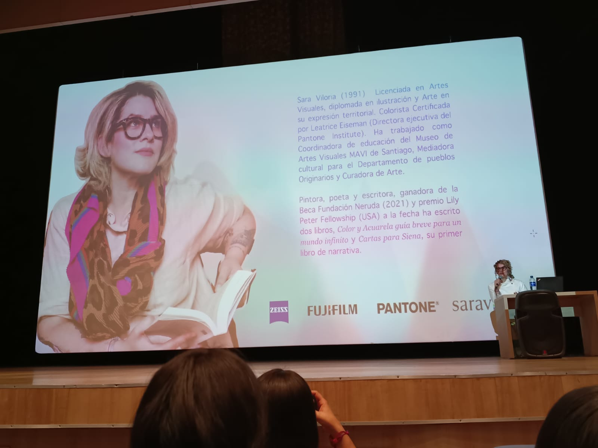
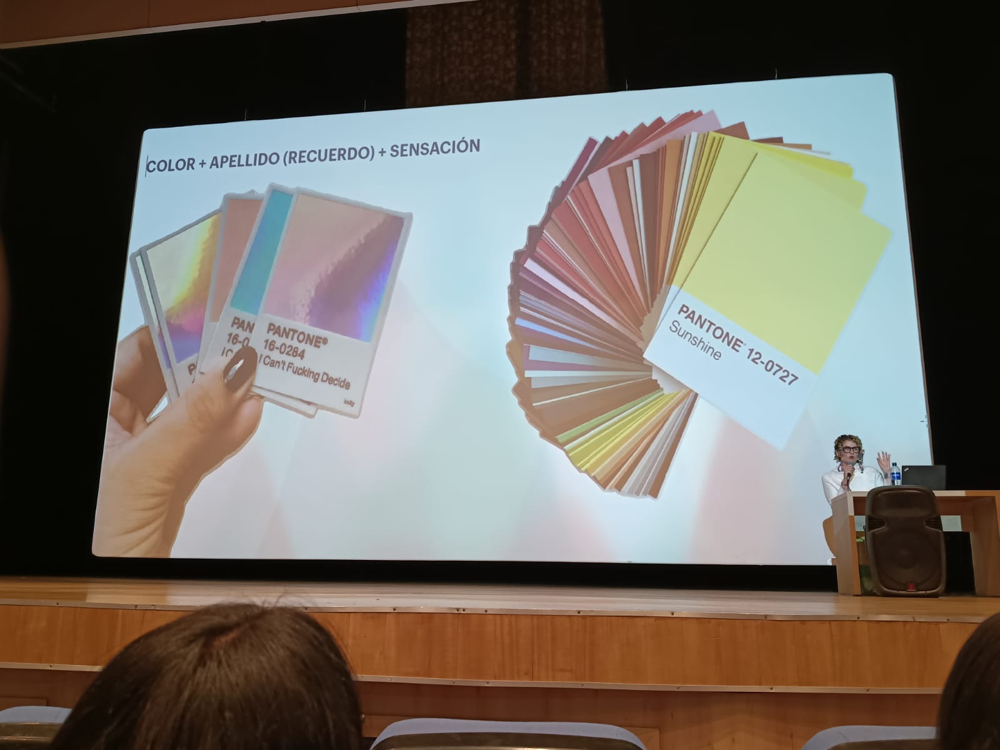
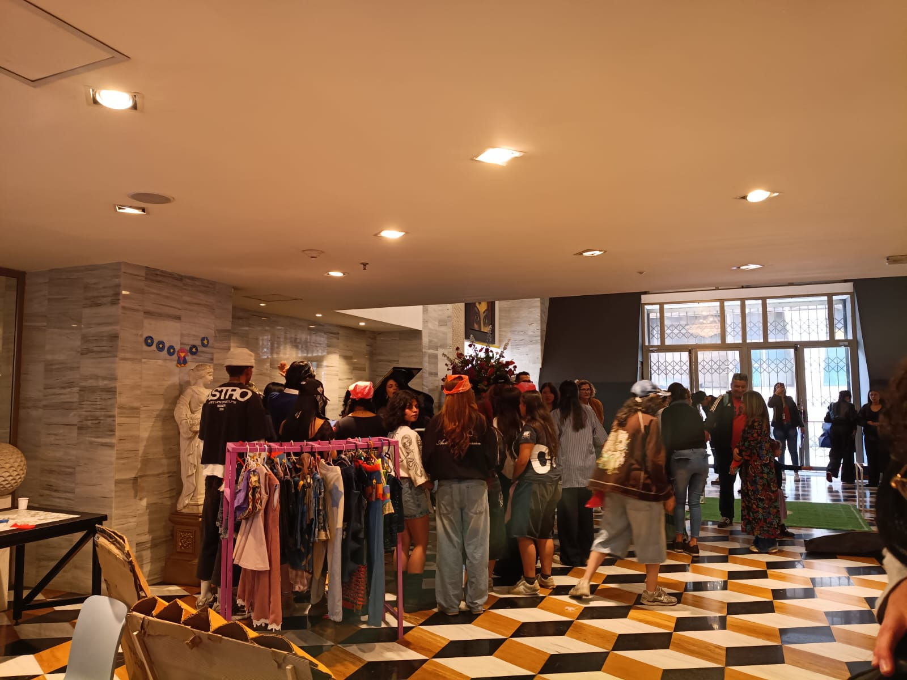

En el evento tuve la oportunidad de asistir a la conferencia dirigida
por Sara Viloria, quien es una artista visual, colorista certificada por el
Pantone Institute y escritora reconocida por su trabajo desempeñado en la teoría
del color; la conferencia fue llevada a cabo en un ambiente académico donde Viloria
compartió su experiencia profesional y su visión sobre el papel que toma el color en el
arte, la moda y la comunicación.
Sara en su presentación destacó cómo el color trasciende lo estético para poder
convertirse en un lenguaje emocional y simbólico, explicó que cada tono tiene una carga
psicológica capaz de influir en la percepción y el comportamiento que puede tener el ser
humano abordando la importancia de objetar lo subjetivo, es decir, poder transformar las
sensaciones y recuerdos al color en herramientas aplicables al diseño gráfico, textil
y publicitario.
Como último en su exposición incluyó referencias históricas como el círculo cromático de
Newton hasta los sistemas contemporáneos mostrando cómo el color puede comunicar fuerza,
serenidad, pasión y equilibrio.
At the event, I had the opportunity to attend a conference led by Sara Viloria, a visual artist,
Pantone Institute certified colorist, and renowned author for her work in color theory; the conference
was held in an academic setting where Viloria shared her professional experience and
vision on the role of color in art, fashion, and communication.
In her presentation, Sara highlighted how color transcends aesthetics to become an emotional and symbolic
language. She explained that each tone has a psychological charge capable of influencing human perception and behavior,
addressing the importance of transcending subjectivity that is, transforming sensations and memories associated with
color into tools applicable to graphic, textile, and advertising design.
Finally, her presentation included historical references, from Newton's color wheel to contemporary systems, showing how
color can communicate strength, serenity, passion, and balance.

Participar en la jornada de Moda ECCI 2026 fue un experiencia valiosa donde se
combinó el arte, el diseño y la relfexión de la importancia del color en la creación
visual. Desde que se dio el ingreso al evento el ambiente estuvo lleno de mucha
energía creativa, los pasillos se transformaron en una exposición de prendas, texturas
y conceptos cromáticos donde cada stand reflejaba el desempeño y el trabajo de los
estudiantes.
La charla dirigida por Sara Viloria fue el evento más inspirador del evento ya que fue
una presentación visualmente impactante porque explicó cómo el color es mucho más que una
cuestión estética es una herramienta emocional, psicológica y comunicativa. De aquí aprendí
que cada tono tiene un significado y una energía propia y que comprender las asociaciones
permite crear diseños más coherentes y expresivos.
Participating in the ECCI Fashion Show 2026 was a valuable experience where art, design, and
reflection on the importance of color in visual creation were combined. From the moment I
entered the event, the atmosphere was filled with creative energy. The hallways were transformed
into an exhibition of garments, textures, and chromatic concepts, where each stand reflected the
performance and work of the students. The talk led by Sara Viloria was the most inspiring event, as
it was a visually impactful presentation that explained how color is much more than an aesthetic matter;
it is an emotional, psychological, and communicative tool. From this, I learned that each tone has its own
meaning and energy, and that understanding these associations allows for the creation of more coherent and
expressive designs.

